l1_logreg: A large-scale solver for l1-regularized logistic regression problems
0.8.2
Kwangmoo Koh, Seung-Jean Kim, and Stephen Boyd
Table of contents
Introduction
l1_logreg is an implementation of the interior-point method for l1-regularized logistic regression described in the paper, An Interior-Point Method for Large-Scale l1-Regularized Logistic Regression. This implementation consists of three main functions: -
l1_logreg_trainfor training -
l1_logreg_classifyfor classification -
l1_logreg_regpathfor (approximate) regularization path computation
l1_logreg concerns the logistic model that has the form
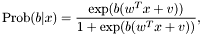
where 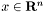 denotes a vector of feature variables, and 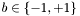 denotes the associated binary outcome (class). Here, 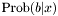 is the conditional probability of , given 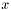. The logistic model has parameters 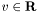 (the intercept) and 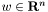 (the weight vector).
With a given set of training examples,
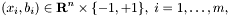
l1_logreg_train finds the logistic model by solving an optimization problem of the form
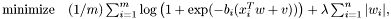
where the variables are  ,
,  , and the problem data are 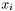, 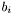 and
, and the problem data are 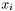, 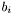 and  . We refer to the problem as a 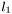-regularized logistic regression problem (l1-regularized LRP).
. We refer to the problem as a 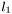-regularized logistic regression problem (l1-regularized LRP).
Once we find maximum likelihood values of 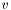 and  , i.e., a solution of the l1-regularized LRP, we can predict the probability of the two possible outcomes, 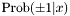, given a new feature vector , using the associated logistic model.
, i.e., a solution of the l1-regularized LRP, we can predict the probability of the two possible outcomes, 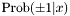, given a new feature vector , using the associated logistic model.
l1_logreg_classify performs classification over a (test) data set  by computing
by computing
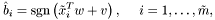
which picks the more likely outcome, given , according to the logistic model found by l1_logreg_train.
The regularization parameter roughly controls the number of nonzero components in , with larger typically yielding sparser . The family of solutions, as varies over  is called the regularization path.
is called the regularization path. l1_logreg_regpath finds an approximate regularization path efficiently using a warmstart technique.
To solve the l1-regularized LRP, l1_logreg uses Preconditioned Conjugate Gradient (PCG) method if the feature matrix is stored in sparse format, and the direct method if the feature matrix is stored in dense format. For more information on file format, see file format page.
Features
l1_logreg - can handle both dense and sparse problems.
- can handle large-scale (sparse) problems (with a million features and examples).
- supports various external BLAS and LAPACK libraries (ATLAS, MKL, ACML and so on).
- can apply standardization to sparse data efficiently.
How to use the package
You can use the package in different ways.-
The easiest method is to use the stand-alone executables
l1_logreg_train,l1_logreg_classifyandl1_logreg_regpathin the command line. See using l1_logreg in shell section. -
Write a C-program that calls the function
l1_logreg_trainandl1_logreg_traininsrc_c/l1_logreg.c. - It is also callable from Matlab, using Matlab system call. See using l1_logreg in Matlab section.
- We hope to add an R interface soon.
Installation
To usel1_logreg, you need to get executables compatible with your machine. You may download precompiled executables or download the source code to build your own.To install precompiled executables, you can simply download executables compatible with your OS and CPU.
If your cannot find appropriate binaries for your machine, follow the instructions in build-your-own section.
If you have trouble in configuration or compilation, see step-by-step installation or check FAQ.
Download
l1_logreg is distributed under the terms of the GNU General Public License 2.0. For commercial applications that may be incompatible with this license, please do not hesitate to contact us to discuss alternatives.
To obtain the l1_logreg distribution, which includes the source code, the manual, and example data sets, use the following links:
- Source package: l1_logreg-0.8.2.tar.gz (352K)
If you just want binaries, you can download them from the following links:
- Binaries for Intel/AMD Linux: l1_logreg-0.8.2-i686-pc-linux-gnu.tar.gz (2.4M)
- Binaries for Intel MAC OS X (10.5): l1_logreg-0.8.2-i686-apple-darwin9.7.0.tar.gz (88K)
If you want to run examples, download and untar the source package first, and put the executables in the binary package at src_c directory. For test, run test_script at the top-build directory of source package after putting/making the binaries in src_c directory.
NOTE: The pre-compiled binaries would be slow. To achieve maximum performance you might want to compile the source code using BLAS appropriate to your own machine.
Before installation, be sure that BLAS and LAPACK libraries are installed in your machine. If not (or not sure), please check the libraries page.
Usage
Using l1_logreg in shell
Typical usage ofl1_logreg_train is:
l1_logreg_train -s train_x train_b 0.01 model
It performs training, that is learning a logistic model from training examples of feature matrix train_x and class vector train_b with = 0.01. The model learned from example data are stored in model.
Typical usage of l1_logreg_classify is:
l1_logreg_classify model test_x result
It classifies the test data using the logistic model parameters stored in model and store the classification result to result file. If you want to not only classify the test data, but also compare the result with a known class vector test_b, use the -t option:
l1_logreg_classify -t test_b model test_x results
Using l1_logreg in Matlab
l1_logreg is callable from Matlab. You may write the problem data (feature matrix and class vector) first using mmwrite script; see writing matrices in Matrix Market (MM) format using Matlab page. You may call stand-alone executables using Matlab system call. For example, mmwrite('ex_X',X); mmwrite('ex_b',b); system('l1_logreg_train -s ex_X ex_b 0.01 model_iono') ... model_iono = mmread('model_iono');You may assign the result file to a Matlab variable using
mmread script. For example, system('l1_logreg_classify -t ex_b model_iono ex_X result_iono') ... model_iono = mmread('result_iono');
Calling sequence for training
Calling sequence forl1_logreg_train is l1_logreg_train [options] feature_file class_file lambda model_fileArguments are
feature_file - feature matrix
class_file - output vector
lambda - regularization parameter
model_file - store model data to file model_file
Options are
-q - quiet mode
-v [0..3] - set verbosity level (default 1)
0 : show one line summary
1 : show simple log
3 : show detailed log
-r - use relative lambda
if used, lambda := lambda*lambda_max
if not used, lambda := lambda
-s - standardize data
Advanced options are
-h - show coefficients histogram and trim
-k <double> - set tolerance for zero coefficients from KKT
condition
-t <double> - set tolerance for duality gap
See file format page for the formats of feature_file, class_file and out_file.
Calling sequence for classification
Calling sequence forl1_logreg_classify is: l1_logreg_classify [options] model_file feature_file result_fileArguments are:
model_file - model data(coefficients and intercept)
found by either l1_logreg_train or
l1_logreg_regpath
feature_file - feature matrix
result_file - store classification results to result_file
if model_file is generated from
1) l1_logreg_train, then predicted outcomes
2) l1_logreg_regpath, then the number of errors
will be stored.
Options are:
-q - quiet mode
-p - store probability instead of predicted outcome
-t <class_file> - test classification result
against real class vector in <class_file>
See file format page for the formats of feature_file, class_file and out_file.
Calling sequence for regularization path computation
Calling sequence forl1_logreg_regpath is: l1_logreg_regpath [options] feature_file class_file lambda_min num_lambda model_fileArguments are:
feature_file - feature matrix
class_file - output vector
lambda_min - minimum value of regularization parameter
num_lambda - number of lambdas (sample)
model_file - store results to file model_file
Options are:
-c - only coefficients (to know real coefficients).
The model_file generated with -c option cannot
be used for classification.
Use this option only to plot regularization path.
-q - quiet mode
-v [0..3] - set verbosity level
0 : show one line summary
1 : show simple log
3 : show detailed log
-r - use relative lambda
if used, lambda := lambda*lambda_max
if not used, lambda := lambda
-s - standardize data
Advanced options are
-k <double> - set tolerance for zero coefficients from KKT
condition
-t <double> - set tolerance for duality gap
See file format page for the formats of feature_file, class_file and out_file.
Example
Training
Consider a small problem with 3 examples and 4 features:
feature 1 feature 2 feature 3 feature 4 class
example 1 3 0 1 -2 1
example 2 0 0 2 5 -1
example 3 7 1 -4 0 1
To solve associated l1-regularized LRP, a user stores a feature matrix and a class vector in MM format. Feature matrix can be stored in either array (dense) format and coordinate (sparse) format. If the problem is stored in dense format, l1_logreg_train uses direct methods. If stored in sparse format, l1_logreg_train uses the PCG method in solving the problem.
The associated feature matrix can be stored in the file train_x in dense format.
train_x %%MatrixMarket matrix array real general 3 4 3 0 7 0 0 1 1 2 -4 -2 5 0The associated feature matrix can be stored in the file
train_x in sparse format. train_x %%MatrixMarket matrix coordinate real general 3 4 8 1 1 3 3 1 7 3 2 1 1 3 1 2 3 2 3 3 -4 1 4 -2 2 4 5
A class file must be stored in array (dense) format for both direct and PCG methods.
train_b %%MatrixMarket matrix array real general 3 1 1 -1 1
To standardize training data train_x and to learn a model with from the standardized training data, execute the following command:
l1_logreg_train -s train_x train_b 0.01 model
This will generate the following file model: model %MatrixMarket matrix array real general % % This is a model file of train_x, % generated by l1_logreg_train ver.0.8.2 % Contents of model: % entry 1: intercept % entries 2..m: coefficients % 5 1 1.568009374292901e+00 4.043495151532541e-01 0.000000000000000e+00 0.000000000000000e+00 -1.103257200261706e+00
Classification
Consider a small test data set of 2 examples with 4 features:
feature 1 feature 2 feature 3 feature 4
example 1 5 1 0 0
example 2 -3 0 2 3
The test data set can be stored in the file test_x in dense format.
test_x %MatrixMarket matrix array real general 2 4 5 -3 1 0 0 2 0 3The test data set can be stored in the file
test_x in sparse format. test_x %MatrixMarket matrix coordinate real general 2 4 5 1 1 5 2 1 -3 1 2 1 2 3 2 2 4 3
To classify the test data set using the logistic model stored in model, execute the following command:
l1_logreg_classify model test_x result
The classification result will be saved in the file result.
result
%MatrixMarket matrix array real general
%
% This is the file that stores the test result of test_x,
% generated by l1_logreg_classify ver 0.8.2
% Each row contains a predicted class of corresponding example.
%
2 1
1
-1
To compare the predicted outcome which will be stored in the result file result with the known outcome test_b, write the known outcome (class) vector file test_b in MM format and execute the following command:
l1_logreg_classify -t test_b model test_x result
Regularization path computation
To generate an approximation of the regularization path, from to a given 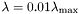, use
to a given 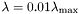, use
l1_logreg_regpath -r train_x train_b 0.01 100 path_model
It generates two files: path_model and path_model_lambda. The former contains a matrix of models whose column corresponds to the logistic model for each value. The latter contains a vector of values. The option -r is used to set value relative to .
To apply classification to this family of models path_model, execute the following command:
l1_logreg_classify -t train_b path_model train_x path_result
The number of examples whose prediction is wrong will be stored to a result file path_result. Note that the result of classification using l1_logreg_regpath is different from that of l1_logreg_train.Example data sets
l1_logreg contains some example data sets as well as their shell scripts in the examples directory. You can download more examples (including large-scale data sets) from the website of l1_logreg.
If you have a problem in using l1_logreg, try FAQ.
Feedback
We welcome your feedback. Please contact Kwangmoo Koh<deneb1@stanford.edu>, Seung-Jean Kim<sjkim@stanford.edu> or Stephen Boyd<boyd@stanford.edu> with your bug reports and suggestions.If you do send a bug report, please include the following information if possible:
-
The versions of
l1_logregand platform (OS, CPU) you are using. - A copy of the error messages, if any, produced by the program.
- The data files that we can use to reproduce the problem.
Your help will be greatly appreciated.